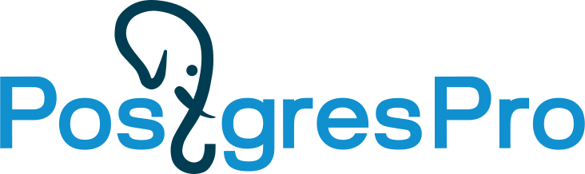
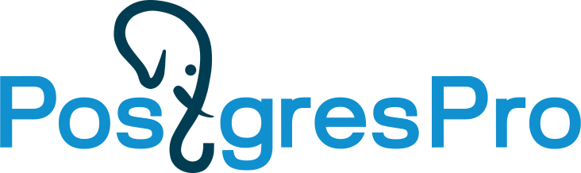

Школа развития цифровых компетенций «Digital Up» (Цифровая кафедра АлтГУ)
Обучение в Digital Up — возможность получить ИТ-квалификацию бесплатно!
Хочу обучатьсяОбучение в Digital Up — возможность получить ИТ-квалификацию бесплатно!
Хочу обучатьсяШкола развития цифровых компетенций «Digital Up» (Цифровая кафедра) создана в АлтГУ, как в вузе-участнике программы стратегического академического лидерства «Приоритет-2030», с целью обеспечить студентам возможность обучения по дополнительным профессиональным программам профессиональной переподготовки ИТ-профиля и получения дополнительной востребованной квалификации. Студенты АлтГУ, обучающиеся по очной и очно-заочной форме обучения 3-го и 4-го курсов бакалавриата, 5-го курса специалитета любых направлений подготовки и магистранты 2-го курса, обучающиеся на образовательных программах, не связанных с ИТ, могут пройти обучение по программе профессиональной переподготовки в Школе развития цифровых компетенций «Digital Up» и получить востребованную ИТ-квалификацию.
В Школе предусмотрены программы переподготовки для студентов, обучающихся по профильным ИТ-направлениям и для студентов, чья будущая специальность не относится к ИТ-сфере. Студент самостоятельно выбирает программу исходя из своих интересов и уровня подготовки. После успешного прохождения всех контрольных точек по программе и итоговой аттестации по окончании обучения вместе с дипломом о высшем образовании студенты получат диплом о профессиональной переподготовке.
Студенты АлтГУ, обучающиеся по очной и очно-заочной форме обучения 3-го и 4-го курсов бакалавриата, 5-го курса специалитета любых направлений подготовки и магистранты 2-го курса, обучающиеся на образовательных программах, не связанных с ИТ, могут пройти обучение по программе профессиональной переподготовки в Школе развития цифровых компетенций «Digital Up» и получить востребованную ИТ-квалификацию.
После успешного прохождения всех контрольных точек по программе и итоговой аттестации по окончании обучения вместе с дипломом о высшем образовании студенты получат диплом о профессиональной переподготовке.
Программ профессиональной переподготовки
Квалифицированных преподавателей привлечены к реализации программ
Крупных ИТ-компаний участвуют в реализации программ
Студентов зачислены на программы
Обучение длится 9 месяцев, объем программ 252 ч.
Каждый студент может выбрать только одну программу.
Набор на 2023 год стартует в июне 2023 года, а обучение начнется в сентябре 2023 года.
Полный список профильных ИТ-направлений доступен по ссылке.
В ходе обучения студентам предстоит пройти комплексную независимую оценку сформированности компетенций на платформе Университета Иннополис с помощью тестовых и кейс-заданий. Комплексная оценка проводится в три этапа и включает в себя входной, промежуточный и итоговый ассесмент.
Входной ассесмент позволит оценить знания каждого студента «на старте». Промежуточный представляет собой оценку цифровых компетенций по итогам освоения половины программы. Итоговый ассесмент покажет уровень сформированности компетенций в результате обучения по программе.

Первый проректор по УР

Начальник управления мониторинга качества и образовательных инициатив

Руководитель Школы развития цифровых компетенций «Digital Up»

Первый проректор по УР

Начальник управления мониторинга качества и образовательных инициатив

Руководитель Школы развития цифровых компетенций «Digital Up»

Первый проректор по УР

Начальник управления мониторинга качества и образовательных инициатив

Руководитель Школы развития цифровых компетенций «Digital Up»

Руководитель Школы развития цифровых компетенций «Digital Up»

Руководитель Школы развития цифровых компетенций «Digital Up»

Руководитель Школы развития цифровых компетенций «Digital Up»


 
